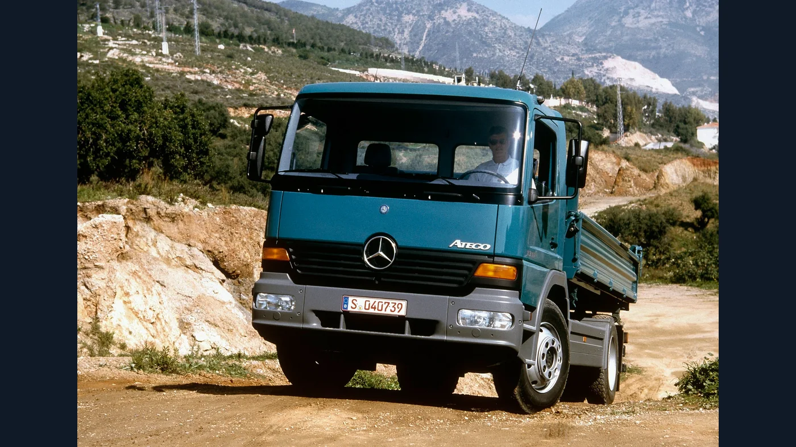
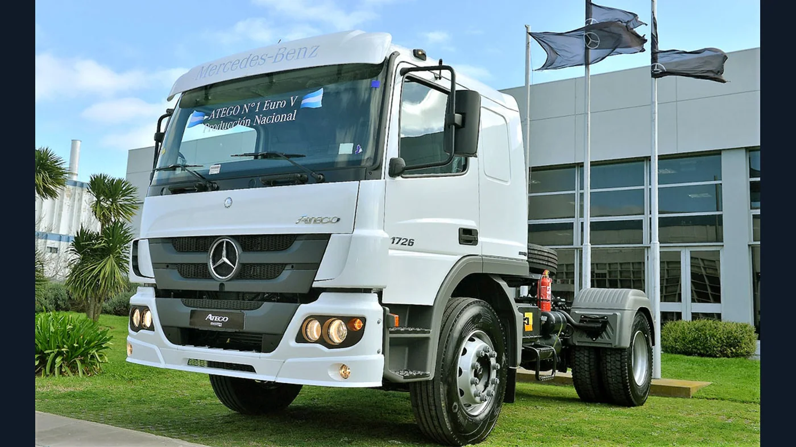

El Mercedes-Benz Atego tiene una historia que no puede resumirse en una sola ficha técnica. Su nombre identifica una familia de camiones que evolucionó durante casi tres décadas, atravesó cambios de motores y transmisiones y encontró un lugar propio en Sudamérica. Para el lector argentino, además, es la historia de un producto que pasó de la oferta importada a formar parte de la producción nacional.
Para entenderlo conviene separar tres cosas: el nacimiento internacional, la evolución en cada región y las características de una versión determinada. Un Atego europeo y uno argentino pueden compartir denominación sin ser mecánicamente idénticos. Las fotografías de distintas épocas que acompañan esta nota muestran por qué esa distinción importa.
1998: el nacimiento de una nueva familia
Mercedes-Benz presentó el Atego en el salón RAI de Ámsterdam, en 1998, como reemplazo de la serie LK. La gama inicial abarcaba de 6,5 a 15 toneladas de masa máxima autorizada, con 25 tipos básicos y cuatro variantes de cabina. Sus motores eran los diésel OM 904 LA de cuatro cilindros y OM 906 LA de seis.
El proyecto buscaba atender reparto, construcción y servicios mediante distintas configuraciones. Ese mismo año aparecieron versiones pesadas de 18 a 26 toneladas. El reconocimiento llegó pronto: el Atego recibió el título International Truck of the Year 1999.

Una identidad construida alrededor del trabajo
La diversidad de aplicaciones es una clave para leer su recorrido. La historia de un camión de distribución no se explica solamente por su potencia: también importa la tarea que realiza y el equipo que lleva detrás de la cabina. Por eso, comparar dos Atego requiere mirar su configuración completa y no únicamente el emblema.
En términos históricos, esa amplitud ayuda a comprender la permanencia del nombre. Lo que se conserva es una identidad de familia; lo que cambia es la respuesta a las necesidades de cada época y mercado. No hubo un único Atego que se mantuviera intacto desde su presentación.
2004: renovación europea y llegada a Brasil
La actualización europea de 2004 incorporó la transmisión G85-6 con cambio automatizado Telligent. La evolución de esa etapa también incluyó tecnología BlueTec SCR para adaptarse a nuevas exigencias de emisiones.
En Sudamérica, 2004 representa otro hito: el lanzamiento brasileño. AutoIndústria recordó esa fecha al cubrir la actualización de la gama por sus veinte años en el país, en enero de 2024. Son procesos que comparten calendario, pero no deben interpretarse como una única especificación mundial.
Esta separación evita un error frecuente al reconstruir modelos regionales: asumir que una novedad anunciada en Alemania llegó simultáneamente, con los mismos componentes, a Brasil o Argentina. Para identificar un camión concreto hacen falta su mercado, su año y la documentación correspondiente.
2007: el capítulo argentino
La retrospectiva de Planeta Camión sitúa la introducción de la línea Atego en Argentina en agosto de 2007. La llegada amplió la presencia de los camiones frontales de la marca dentro de una transición que también involucró a las familias anteriores.
Es importante distinguir llegada comercial de fabricación local. Que el Atego estuviera disponible en el mercado argentino no significa que todas sus versiones ya se produjeran aquí. Su trayectoria nacional tiene, por lo tanto, un capítulo de introducción y otro industrial posterior.
La experiencia BlueTEC Hybrid
El Atego también participó en la búsqueda de alternativas al diésel convencional. El BlueTEC Hybrid 1222L combinó propulsión diésel y eléctrica; la retrospectiva oficial lo ubica en 2010. La familia volvió a obtener el reconocimiento International Truck of the Year para 2011.
Una comunicación de Mercedes-Benz sobre dos unidades entregadas a Ziegler describe la arquitectura híbrida paralela: el motor eléctrico se ubicaba entre el conjunto motor-embrague y la transmisión. El sistema permitía combinar ambas fuentes de propulsión e incorporar recuperación de energía.
Ese antecedente no convierte en híbridos a los Atego convencionales ni indica que esa variante se haya comercializado en Argentina. Su interés histórico es otro: muestra que el nombre también estuvo ligado a ensayos comerciales de nuevas formas de propulsión, mucho antes de la actual expansión del camión eléctrico.
2013: una nueva etapa europea con Euro VI
El comunicado de lanzamiento de 2013 describe una renovación para el segmento europeo de 6,5 a 16 toneladas. Introdujo motores OM 934 de cuatro cilindros y 5,1 litros y OM 936 de seis cilindros y 7,7 litros, junto con la transmisión automatizada PowerShift 3 y cambios en el vehículo.
Este hito debe ubicarse en su contexto: era la evolución europea hacia Euro VI. No implica que la gama argentina de aquel año utilizara esos mismos motores o esa norma de emisiones. De hecho, el desarrollo regional siguió su propio calendario, como se observa en la etapa nacional de 2016.
Por eso resulta más claro hablar de fechas y configuraciones que adjudicar un número de generación a todos los Atego del mundo. Una cabina conocida puede acompañar cambios importantes debajo de ella, mientras que una denominación comercial puede continuar en mercados con recorridos técnicos diferentes.
2016: producción argentina y motores Euro V
La noticia publicada por 16 Válvulas el 21 de septiembre de 2016 documenta la fabricación de la nueva familia Atego en el Centro Industrial Juan Manuel Fangio. Los modelos 1720 y 1726 formaban parte de esa etapa, en reemplazo de los Atron 1720 y 1624 respectivamente.
La cobertura identifica para el 1726 un motor Mercedes-Benz OM 926 LA Euro V de seis cilindros en línea. También describe la adaptación de la producción y de sus equipos de prueba. Esta referencia contemporánea permite ubicar la fabricación local en 2016, sin confundirla con incorporaciones posteriores de otras variantes.

Los nombres de modelo no reemplazan una ficha técnica
1720, 1726, 1729 o 2430 son denominaciones que pueden aparecer al hablar de la familia en la región. Sin embargo, para reconstruir una unidad no alcanza con reconocer ese número. La configuración, el año y la versión deben confirmarse antes de atribuirle un motor, una caja o una capacidad determinada.
Lo mismo ocurre al buscar repuestos. Una historia general ayuda a orientarse entre etapas, pero no demuestra compatibilidad. El chasis, la identificación del componente y la documentación del vehículo siguen siendo las referencias útiles para una consulta precisa.
2026: el Atego en la nueva planta de Zárate
El recorrido argentino sumó un nuevo capítulo el 12 de mayo de 2026, cuando Daimler Truck comunicó la inauguración del Centro Industrial Zárate. El complejo reúne la producción de Atego y Accelo, además de chasis de buses, logística de repuestos y actividades de remanufactura.
El anuncio oficial informa una inversión total de 110 millones de dólares. Para la historia del Atego, lo relevante es su continuidad como producto fabricado en Argentina dentro de una nueva instalación industrial. No se trata de un cambio de nombre ni de un lanzamiento global: es un hito de su trayectoria productiva local.
Cómo entender su legado
El Atego reúne distintas historias bajo una misma denominación: el relevo de la serie LK, la evolución de los camiones de distribución europeos, una experiencia híbrida y el crecimiento de su presencia sudamericana. Su recorrido argentino agrega otra dimensión: la incorporación de producción y respaldo industrial propios.
El hilo conductor no es que todos los Atego sean iguales, sino que la familia pudo cambiar sin perder su identidad. Esa es la mejor forma de acercarse a su historia: reconocer las etapas, ubicar cada modelo en su mercado y entender el camión como una herramienta de trabajo completa.
Para propietarios, conductores y talleres, esa mirada tiene una consecuencia práctica. Conocer la historia permite formular mejores preguntas; conocer la unidad concreta permite responderlas. Ambas cosas importan cuando se quiere comprender qué Atego tenemos delante y qué lugar ocupa dentro de casi tres décadas de evolución.